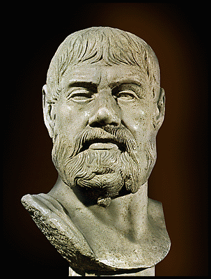
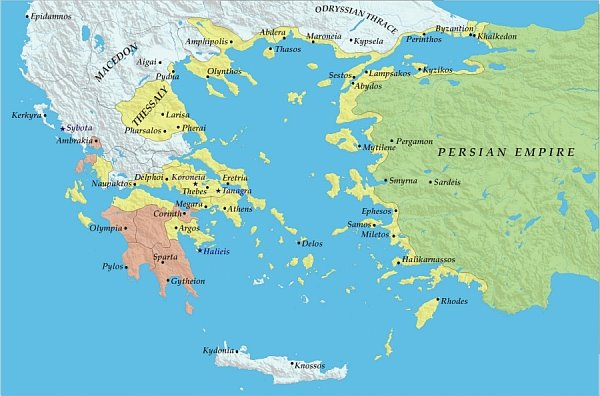
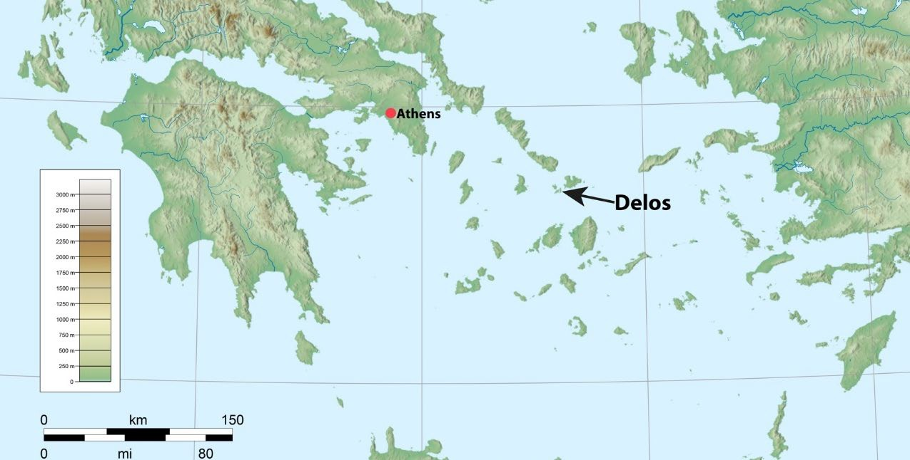
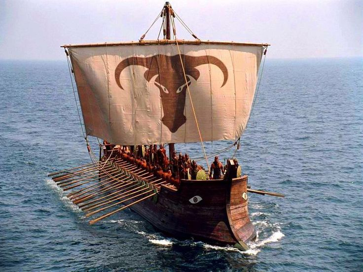

Formation of the Delian League
The Origins of the Delian League
Although Sparta had successfully led the Greek forces to victory against the Persians in 480–479 BC, it was Athens who emerged as the greatest power in Greece in the next decade.
Athens became the leader or hegemon of a league of naval states called ‘The Athenians and their Allies’. A modern term used by historians for this organisation is the ‘Delian League’ or ‘Confederacy of Delos’.
The members of the Delian League continued the war against Persia in the Aegean Sea and along the coasts of Asia Minor.
Spartan Reluctance to Continue the War
After the battle of Mycale, the Greek fleet returned to Samos to hold a council of war. Leotychidas, the Spartan leader of the Greek forces, was faced with a problem.
The Ionian Greeks were deserting the Persians and wanted to join the Spartans’ alliance as they couldn’t maintain their independence from Persia on their own. They would need continuous help from mainland Greece.
However, the Spartan and Peloponnesian contingents did not want to spend any more time in the eastern Aegean so far from home. The Spartan commander suggested the Ionians leave their homeland and settle in those states of mainland Greece that had medised (gone over to Persia in the previous war). The Ionians were shocked at this suggestion and the Athenians supported them in their refusal.
The Spartans reluctantly accepted the Ionians into their alliance of city-states and agreed to sail to the Hellespont to break the bridges of the Persians. When they found the bridges already gone, Leotychidas and the Peloponnesians sailed home.
The Athenians, under the command of Xanthippus, remained in the area to get rid of the Persians from the strategic town of Sestos. Years later, when Sparta was complaining about Athens’ powerful empire, the Athenians replied:
“We did not gain this empire by force. It came to us at a time when you were unwilling to fight on to the end against the Persians.”
— Thucydides, The Peloponnesian War I.75
The Actions of Pausanias
In 478 BC the Spartan government put Pausanias in charge of a Greek fleet to free those states still under Persian control. He freed Byzantium at the entrance to the Black Sea but while there began to behave badly towards the Eastern Greek allies. Plutarch says:
“He scattered insults far and wide with his officiousness and absurd pretensions.”
— Plutarch, Aristides 17

Pausanias’ behaviour caused such resentment amongst the Ionians that they asked Athens to take over control. Pausanias was recalled by his own government and replaced by another commanding officer whom the Ionians also rejected. Spartan leadership was no longer acceptable.
Spartan Unsuitability to Lead
There were many Spartans who were content to give up the leadership in the continuing conflict with the Persians in the east. Why was this the case?
They had domestic problems to deal with. There was always the fear that the helots would revolt if the Spartan army spent too much time outside the Peloponnese.
Sparta also needed to consolidate her position within the Peloponnese where she had powerful enemies such as Argos.
They were afraid of being disgraced again by high-ranking Spartan officers sent abroad.
They were a military, land-based, rather than a naval, power.
Athens Takes the Lead
The Spartan system also created people with a narrow and rigid attitude. They tended to be isolationist and inward looking, hardly a suitable outlook for the leader of a widespread organisation.
The Athenians, who were of Ionian descent, were held in high regard after Salamis and had a large and experienced navy which was essential for leadership of any league of coastal and naval states. They were in a much stronger position now than they had been when they first sent aid to the Ionians during the Ionian Revolt in 499 BC. They were the obvious choice to take up the hegemony (leadership) of the island and coastal states of the Aegean region.
So, Athens took over the leadership, and the allies, because of their dislike of Pausanias, were happy about this.
Original Membership
Although the number of original members is not known, the area covered by the league in the first year is believed to have extended from Byzantium (north-east) to Aineia (north-west) and from Rhodes (south-east) to Siphnos (south-west).

Aims of the Delian League
Thucydides mentions that one of the objectives of the league was to ‘free the Greeks from the Persians’. This referred to those Greek states in the northern Aegean and Asia Minor which were still under Persian control. Associated with this was the need to protect those towns and cities which had revolted from Persia and those which were to be freed in the near future.
Thucydides mentions another objective — to avenge what the Hellenes had suffered by ravaging (destroying) the ‘territory of the King of Persia’.
The three objectives (to free, to protect, to destroy) involved the League members in both offensive (attacking) and defensive (defending) actions.
Historian Views on League Aims
Historian Anton Powell considers whether the League’s policy of attacking Persian territory was intended partly to prevent a repeated invasion:
“It is worth considering whether their policy of attacking Persian territory by means of the Delian League was intended in part to prevent a recurrence of the great invasion. Persia had, of course, been heavily defeated in 480–479 but she had retained most of her empire, including Egypt, the greater part of Asia Minor, and, indeed, most of the Middle East. A repeated invasion might seem to outsiders, such as Athens and her naval allies, to be a political necessity for the Persians, if they were to prevent discontented subjects in their more remote provinces, from drawing subversive conclusions about Persian weaknesses.”
— Anton Powell
When Thucydides explained that one of the allies’ intentions was to ravage the territory of the King of Persia, he used the word ‘proskhema’. This has been translated in a number of ways by recognised historians:
- professed purpose (R. Meiggs)
- announced intention (Gomme)
- pretext (GEM de Ste Croix)
GEM de Ste Croix believes that when Thucydides and other Greek writers used this term they meant ‘a pretext’:
“I fancy that his [Thucydides’] choice of the word [proskhema] would have left them [his readers] with the feeling that the talk of revenge through ravaging expeditions was at least partly a cover for ambitious Athenian designs for organising a large, active, powerful and rich alliance under their control.”
— GEM de Ste Croix, 1972, The Origins of the Peloponnesian War, Duckworth, p. 302
In Thucydides’ account, Hermokrates of Syracuse states that Athens became leader of willing allies in eastern Greece ‘as being a state which intended to punish the Persians.’ (Thucydides 1.96.1)
Is revenge a plausible motive for establishing and joining an alliance with Athens? Terry Buckley argues:
“Certainly, the Athenians and others had suffered severe material loss from the two Persian occupations of 480 and 479, and the prospect of booty from such a wealthy empire as Persia was undoubtedly attractive. However, such an aim would have been very limited and short-term for a permanent league — at some point in the not too distant future the Greeks would have gained the appropriate compensation. This stated aim was probably a very convenient one, upon which all the members could agree, although harbouring different ideas as to what they wanted from the League. The allies, especially the cities on the Asiatic mainland and the neighbouring islands, fresh from deliverance from Persian domination, wanted continued freedom.”
— Terry Buckley, 1996, Aspects of Greek History 750–323 BC, Routledge, p. 191
“The allies’ freedom from and independence of such a powerful empire as Persia required the existence of a permanent, military league to ensure the maintenance of these objectives. The Athenians for their part, while accepting that the success of the League in creating an effective buffer zone between themselves and Persia would guarantee their liberty, also saw that they would confirm and increase their status as one of the two super-powers in Greece by being the hegemon of a strong naval league. The example of the Spartans’ dominant influence in Greek affairs due to their leadership of the powerful Peloponnesian League was a great incentive to the Athenians to create something similar, in which they could invest their newly acquired military strength and prestige.”
— Terry Buckley, 1996, Aspects of Greek History 750–323 BC, Routledge, p. 191
Activity Questions
- What were three aims of the Delian League?
- Why did Athens become hegemon?
- Main reasons for Sparta’s unsuitability as leaders?
- Areas of contention between historians?
The Organisation of the League
Organising the League
The two Athenians who were most influential in organising and leading the Delian League were Aristides and Cimon.
Aristides’ first task was to organise a meeting of delegates from Athens and the Aegean and Ionian allies. This was to be held on the island of Delos which was chosen as the headquarters of the league.

Why Delos?
There are several reasons why Delos was chosen as the headquarters of the League.
Delos was the ancient centre of Ionian culture and religion based on the cult of Apollo. Remember, the Athenians were of the same racial group as the Ionians of Asia Minor.
It possessed a good harbour which was important for a naval league.
The tiny island of Delos was politically insignificant.
Financing the League
To carry out its objectives the Delian League had to be financed. The allies appointed Aristides ‘to survey the various territories and their revenues to fix the contributions according to each member’s ability to pay.’
It is believed that Aristides assessed the total amount as 460 talents and then decided which states should contribute ships to the league navy and which states should provide money.
Note: A talent was a weight and a unit of currency. One talent of silver equalled 6,000 drachmas and 36,000 obols. A skilled worker earned approximately one drachma a day, while an unskilled worker earned one obol a day.
Contributions: Ships vs Money
Those states which contributed ships, such as Athens and the large islands of Chios, Samos, Lesbos, Naxos and Thasos, retained control of their ships and were expected to serve in the League fleet for only part of the year.
Aristides worked out a money equivalent for the ship contributions. The money contributions, called phoroi (phoros — singular), were collected by ten Athenian officials called hellenotamiae (stewards of the Greeks). The money contributions were kept in the treasury at Delos.
Plutarch praised Aristides for his ‘scrupulous integrity and justice’ in drawing up the lists of assessments and recorded that the league members ‘felt they had been appropriately and satisfactorily dealt with.’

Meetings and Council
Although the leadership of the League was Athenian, it was agreed that each member state was to be autonomous (independent). There was no compulsion for members to have a particular form of government. Some states were democratic while others were oligarchic.
According to Thucydides, a council or synod of allied representatives met in the temple at Delos. It is not known how often these meetings were held or at what time of the year. They were probably convened when the allies’ representatives brought their contributions to Delos, possibly at the time of the festival of the Delian Apollo.
This was celebrated at the beginning of the sailing season and would have been an ideal time to discuss the campaigns to be conducted during the summer and to receive a report from the hellenotamiae.
The council decided league policy and strategy and Athenian officials carried them out. It is possible that Athens, as leader and most influential state, could control the vote by her patronage (support) or intimidation (threat) of smaller states. They would tend to follow Athens’ lead.
Oaths of Allegiance
Oaths of allegiance were taken by Athens and the allies when the Delian League was formed.
Thucydides does not mention the oaths directly but Plutarch and Aristotle do.
“… it was [Aristides] … who swore the oaths to the Ionians that they should have the same friends and enemies, to confirm which they sank lumps of iron into the sea.”
— Aristotle, Athenian Constitution 23
“It was Aristides who made all the Greeks swear to maintain the alliance against the Persians, and he himself took the oath for Athens and to solemnise it threw wedges of hot iron into the sea.”
— Plutarch, Aristides 25 in The Rise and Fall of Athens
According to Aristotle and Plutarch, the allies agreed to continue the war against Persia and to ‘have the same friends and enemies.’ This latter point meant that they agreed to have the same foreign policy.
The act of throwing iron into the sea has been interpreted by the majority of historians to mean that the oaths were to be permanent. That is, the members were not to leave the league until the iron floated or until Persia was no longer a threat.
However, others — like H. Jacobsen in Philologus, 119 — have interpreted it to mean that anyone breaking the oath would be thrown out of the League.
If we support the former view, the symbolism implies that secession or breaking away from the league would be seen as rebellion and that the league members would be justified in forcing rebellious members back into allegiance.
Activity Questions
- Why was Delos chosen as headquarters?
- What two types of member contributions existed?
- What two interpretations exist regarding allegiance oaths?
Activities of the Delian League
Thucydides as a Source
There are three things you should remember about Thucydides’ brief account of the early actions of the Delian League.
He mentions only those incidents which had a direct bearing on his theme, that is, the growth of Athenian imperialism. It is important to remember that there may very well have been other actions taken by the League members but we have no evidence of these.
According to Thucydides it appears that the Athenians did all the work. Although Athens was the leader, the actions were all carried out as an allied effort.
The exact dates for some operations are not known although we do know the sequence of most events.
Although the aims of the Delian League from the beginning were to free those Greeks and city-states from the control of Persia, the League forces were also starting to be used against other Greek city-states.

Capture of Byzantium (478–477 BC)
Pausanias was driven out of Byzantium and the city captured. This cut the Persians off from their garrisons in Thrace and gave the Greeks access once again to the valuable trade of the Black Sea.
Siege of Eion (476–475 BC)
The town of Eion, at the mouth of the Strymon River, occupied a very strategic position on the major east–west land route. It was also of great economic importance. The gold mines of Mt Pangaeus were nearby and the town was a centre of exchange for the rich resources from the hinterland (precious ores, timber and corn).
The Persian commander, Boges, defended it heroically but when defeat was obvious, he built a pyre (fire) and he and his family committed suicide after throwing all their possessions into the river. Later Athens made several attempts to settle this important area.
Conquest of Scyros (474 BC)
The rocky island of Scyros was the stronghold of a group of non-Greek pirates.
This had nothing to do with Persia, so why did the Delian League fleet attack? Plutarch suggests an oracle instructed Cimon to capture the island and recover the bones of Theseus, the legendary Athenian king, and return them to Athens. This had a lasting impression on the Athenians and may have symbolised Athenian confidence in their growing naval power.
An important result of this action was the establishment of an Athenian settlement on the island. This was not a colony but a kleruchy. Athens later established kleroi all over the Aegean area. This was another indication of Athens’ plans to extend its sphere of influence.

Coercion of Carystus (472 BC)
Carystus, on the southern tip of Euboea, had been unwilling to join the Delian League so the League used force or coercion to enrol it in the League. Why did they do this?
Carystus had collaborated with the Persians in 480 BC by sending ships to the Persian fleet after the Battle of Artemisium. Members of the League, particularly Athens, thought they might do so again.
The position of Carystus, close to Athens and dominating the sea route between Euboea and Andros, made this possibility very dangerous. It is possible that the members also thought that Carystus was enjoying all the advantages of League membership (protection) without any of the responsibilities.
However, to make war on a state which desired to remain neutral, and to deprive it of its independence was an outrage to most Greeks. The only justification that the League could make was that of political necessity, as the Persians were still a major threat in the region.
Revolt of Naxos
Naxos was one of the largest islands in the Aegean and an important ship-contributing member of the Delian League.
Thucydides says that after the coercion of Carystus, Naxos wanted to leave the League (secede or break away). He doesn’t explain why, but simply says:
“… Naxos left the League and the Athenians made war on the place. After a siege Naxos was forced back to allegiance. This was the first case when the original constitution of the League was broken and an allied city lost its independence …”
— Thucydides, The Peloponnesian War 1.99
Although it is not certain what punishment was meted out to Naxos, it probably lost its independence and its right to vote in the council at Delos. It may have been required to pay a tribute in the form of money instead of contributing ships. Whether it had to surrender its fleet and pull down its walls is uncertain.
Naxos was the first example of what was to become a recurring pattern, that is, the revolt of a member state and its loss of independence. Such actions created a third type of league member — a subject which paid tribute.
Operations in Caria and Lycia
The coasts of Caria and Lycia were still in Persian hands and according to Plutarch:
“Cimon sacked or destroyed some cities and induced others to revolt or annexed them, until not a single Persian soldier was left on the mainland of Asia Minor from Ionia to Pamphylia.”
— Plutarch, Cimon 12

Battle of Eurymedon (468 BC)
The Greek city of Phaselis refused to revolt against Persia and join Cimon in his campaign against the Persians in the area. Cimon attacked the walls of Phaselis and devastated the countryside until the population agreed to be enrolled in the League. (Plutarch)
The League fleet then sailed further east to the mouth of the Eurymedon River where the Persians, attempting to block any further advance of the Greeks along the coast, had a large fleet stationed.
The Persian fleet was not yet at full strength and the commanders were waiting for reinforcements from Cyprus. The Greek aim was to strike a final blow at the Persians to prevent them from entering the Aegean Sea again in force.
This was the most ambitious and costly campaign ever undertaken by the League fleet. Plutarch says that a new type of trireme had been built to carry more hoplites. So, Cimon must have expected a different type of operation (more fighting on land) from those carried out previously.
Cimon not only inflicted a crushing defeat on the Persian navy but on the same day:
“… he threw back the barbarians with great slaughter and captured the army and its camp which was full of all kinds of spoil.”
— Plutarch, Cimon 13
He followed up this double victory by intercepting and capturing the eighty Phoenician ships being sent from Cyprus to reinforce the Persians.
Outcomes of Eurymedon
There were several outcomes from the Battle of Eurymedon.
This battle eliminated further serious Persian threats in the Aegean.
Cimon’s reputation was enhanced as this was his greatest victory.
From the captured spoils the Athenians made rich dedications to the gods and began the construction of the southern wall of the Acropolis and the Long Walls of Athens which linked the city with the port of Piraeus.
This victory justified the Delian League’s existence up to this point (468 BC). The members had carried out the League’s objectives of freeing and protecting the Greeks and attacking the Persians’ possessions.
Some member city-states felt the Delian League had achieved its main objective, and might have thought that the price of membership (payment of tribute or contributions of ships and crews) was now too high. On the other hand, some might have thought that there were still many advantages to be gained from remaining in the League.
What direction would the League take now? In the years after 468 BC, the League, under the influence of Athens, took more actions against its own members and came into conflict with some of the Peloponnesian powers.
Activity Questions
- Write a summary of league activities.
- Plutarch’s reason for conquering Scyros?
- More likely reason for conquest?
- Importance of actions against Naxos?
- Would Naxos treatment worry other members?
Prominent Individuals
Aristides the Just
Aristides was appointed to oversee financial contributions due to his scrupulous character. He was called “Aristides the Just” because of his unwavering commitment to justice.
Key characteristics from Plutarch
- “sturdy champion of justice, who was as little swayed by personal sympathy or the help of troops or ships or cavalry, but enough tact and diplomacy”
- Never unduly elated by honours, bore reverses with composure
- Served his country freely without reward
- Treated allies with courtesy and consideration
His contributions included
- Organising the first delegate meeting in Delos
- Surveying member territories for fair contributions
- Calculating money equivalents for non-ship contributors
- Making members swear oath of allegiance
Historian perspectives
Robin Osborne notes Aristides had key roles in 480 BC events, supporting Themistocles at Salamis and serving at Plataea.
“During the confused struggle a valuable service was performed by the Athenian Aristides, son of Lysimachus… He took a number of the Athenian heavy infantry… where they killed every one of the Persian soldiers who had been landed there.”
— Herodotus
Activity
- Find quotes evidencing different Aristides roles.
- Did he deserve the “Just” title?
Cimon
As son of Miltiades, Cimon was from a leading conservative aristocratic family. From 477–461 BC, he led Delian League forces through character and skill.
His campaigns included
- Capture of Byzantium
- Siege and capture of Eion
- Conquest of Scyros
- Naxos revolt suppression
- Battle of Eurymedon
Despite military success, Cimon favoured oligarchy and opposed radical democratic reforms. He maintained strong support for Sparta and believed in dual hegemony — Sparta for military leadership, Athens for naval supremacy.
Historian perspectives
“He was, however, a great patriot who never tried to gain personal power beyond that of a legally elected strategos… he became one of the builders indirectly of democracy and directly of Athenian rule over the Aegean.”
— Victor Ehrenberg
Victor Ehrenberg describes Cimon as a typical aristocrat opposed to Themistocles.
“he experienced like good fortune by land on the same day; for after capturing the enemy’s vessels, he immediately led out his troops from the fleet, and overthrew at the first onset a vast force of the barbarians.”
— Cornelius Nepos
Activity
- Which campaign ended the Persian threat?
- Why couldn’t Cimon gain full Athenian support despite military success?
Extended Response Assignment
Prompt: “To what extent did the Delian League fulfil its aims?”
Requirements
- Clear introduction, body, and conclusion structure
- Topic sentences beginning each body paragraph
- Evidence and quotes supporting ideas
- Regular restatement of question and argument
- 800–1000 words